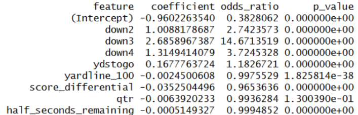
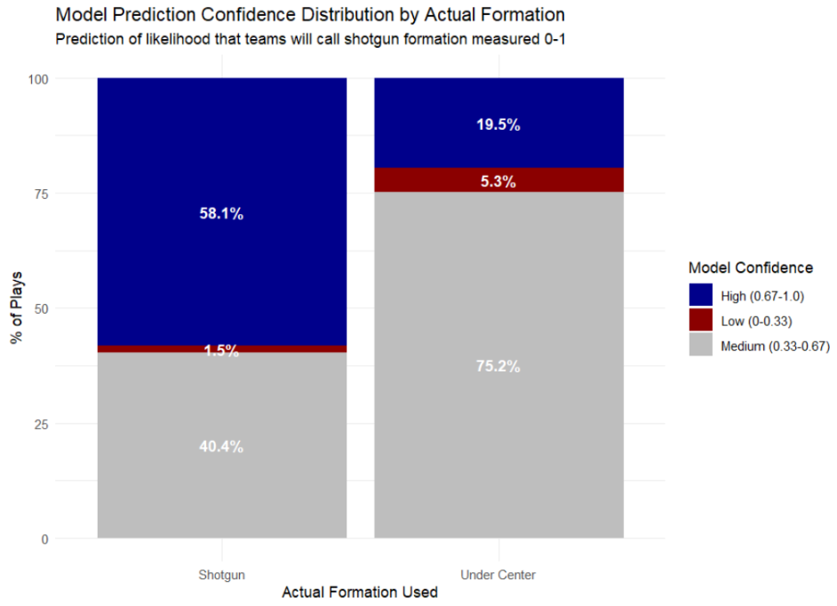
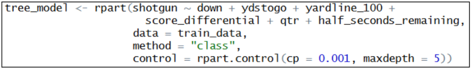
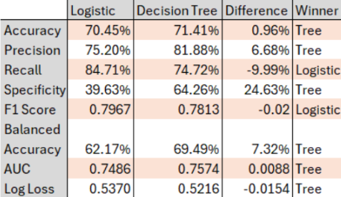
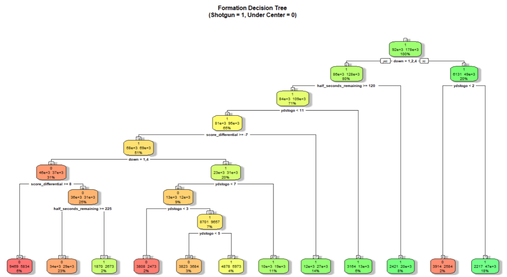

Modeling Formation Tendency
Overview: Descriptive vs. Predictive Modeling
Having established the historical context for formation evolution and situational tendencies, the analysis now turns to quantifying the situational drivers of formation selection with greater statistical precision. This descriptive modeling phase serves a dual purpose: it validates that the situational variables available in the nflfastR dataset are genuinely predictive of formation choice, and it produces interpretable coefficient estimates that quantify the significance of each factor’s influence on the shotgun versus under center decision.
The modeling dataset was constructed from plays spanning the 2016 through 2025 seasons, filtered to standard run and pass attempts and cleaned of special teams plays, penalties, kneels, and spikes. An 80-20 temporal train-test split was applied, with seasons 2016 through 2023 comprising the training set of 269,903 plays and seasons 2024 through 2025 forming the test set of 68,343 plays. This segmentation was chosen to capture relevant historical trends without overfitting on the high under center usage of the early 2010’s, and provide a large enough sample size for all critical down and distance scenarios to generalize for future seasons with evolving offensive and defensive tendencies. The training set showed 65.8 percent shotgun usage while the test set showed 68.4 percent, a modest distributional shift consistent with the continued growth in shotgun adoption documented in the trend analysis.
Six predictor variables were included across all formation tendency models: down as a categorical variable with four levels, yards to go as a continuous variable, field position measured as yards from the opponent’s end zone, score differential as a signed continuous variable, quarter, and seconds remaining in the half as a continuous variable. These variables collectively capture the game state information most directly relevant to formation decisions without requiring proprietary data unavailable in the public dataset.
Logistic Regression Model: Quantifying Formation Drivers
The first modeling approach applied binary logistic regression predicting the shotgun indicator(0 or 1) from the six situational variables. Logistic regression is well-suited to this initial descriptive purpose because its coefficients are directly interpretable as log-odds ratios that directly describe how each predictor impacts the probability of calling shotgun in terms coaches and analysts can intuitively grasp.

The model achieved an overall accuracy of 70.5 percent on the test set with an AUC of 0.749, indicating the situational variables collectively explain a substantial portion of the formation selection decision. All coefficient estimates were statistically significant at p < 0.0001 apart from quarter at 0.13, confirming that almost every predictor adds genuine information about formation likelihood beyond what the others capture.
The odds ratios tell the most direct story about formation selection logic. The third down coefficient produces an odds ratio of 14.67, meaning that holding all other variables constant, a play on third down is nearly fifteen times more likely to be run from shotgun than a comparable first down play. This is the largest single effect in the model by a considerable margin and reflects the NFL’s near-universal adoption of shotgun as the default formation on critical conversion downs. Second down shows an odds ratio of 2.74 and fourth down 3.72, both substantial but considerably smaller than the third down effect. Despite fourth down carrying higher stakes, its odds ratio is lower because fourth down situations have a higher proportion of short yardage situations.
The yards to go coefficient produces an odds ratio of 1.18 per yard, meaning each additional yard needed for a first down increases the probability of shotgun being called by 18 percent. This compounds across the realistic range of distances. A team facing ten yards to go is approximately 4.4 times(1.18^9) more likely to align in shotgun than a team facing one yard to go in the same other situational context. The score differential coefficient of -0.035 confirms that trailing teams are slightly more likely to deploy shotgun, with each point of deficit incrementally increasing shotgun probability, a relationship that makes intuitive sense as when teams are down they prioritize getting as much yardage as possible per play.
While the coefficients for field position and time remaining in the half seem meaningless at -.0025 and -.0005 respectively, using the odd ratios to calculate the difference helps quantify what they actually mean. A team at the opponents’ 1 yard line is roughly 11.5%(0.997549^-1) less likely to use shotgun than at the 50 yard line, ceteris paribus. While the effect per yard is negligible, it accumulates across the field such that a team at the opponent’s one-yard line shows meaningfully lower shotgun probability than the same team at midfield. With 1,680 seconds being the difference between the start of a half at 1,800 seconds and the two minute warning at 120 seconds, a team with a full half ahead of them is 43.2%(0.99951680^-1) less likely to use shotgun than a team in the final two minutes, ceteris paribus. This relationship captures what we see on TV, that in the two-minute drill, shotgun usage is much more prominent, reflected in the decision tree analysis below.
Precision, Recall, and the Under Center Prediction Problem
While overall accuracy of 70.4 percent appears strong for a six-variable model, disaggregating performance by predicted class reveals an important asymmetry with direct implications for understanding how predictable each formation type has become. The model achieved a recall of 84.7% for shotgun plays. However, the effective recall was far weaker for under center plays, with the model correctly identifying only 39.6% of actual under center plays as captured by the specificity metric.
To look further into this, I wanted to examine when the model was highly confident about its prediction, which I defined as predicted probability below 0.33(confident in under center) or above 0.67(confident in shotgun). Restricting evaluation to the 48.6 percent of predictions where the logistic model expressed high confidence, overall accuracy improved to 85.1 percent with shotgun recall of 97.4%, but the distribution of confident predictions was almost entirely shotgun. Of 33,242 high-confidence predictions, 31,364 were confident shotgun calls and only 1,878 were confident under center calls. Most significantly, the recall for under center plays dropped to 21.6%, reinforcing that the model’s predictive power is asymmetric in a way that reflects the asymmetric usage of each formation type in the modern NFL.

Notably, the logistic model “confidently” predicted only ~5% of the actual under center plays, and was “unsure” of its prediction for ~75% of actual under center plays compared to only ~40% of shotgun plays. This drastic difference reflects the reality that under center usage has become so situationally selective, depending mainly on the coaches schematic preferences, that it is difficult to anticipate from game state variables alone. When teams deploy under center formations in the modern NFL, they do so in situations that a league-wide model trained on average behavior cannot consistently recognize as under-center situations. While it’s important to note that the performance of the linear model is skewed as the training data has a majority of shotgun play calls(65.8%), it is still a meaningful result.
Improving Specificity With Decision Trees
The logistic regression’s core limitation was its specificity of 39.6 percent on under center plays because linear probability models cannot capture the threshold and interaction effects that govern under center usage in specific situations. A decision tree classifier was trained on the same features and training data, offering the advantage of automatic non-linear partitioning that can identify the specific combinations of situational variables where under center becomes the preferred formation choice. A baseline tree was trained with a complex parameter of 0.001 and max depth of 5.

To optimize the tree, I then manually tuned hyperparameters sequentially across complexity parameter, maximum depth, minimum split size, and minimum bucket size. The complexity parameter was evaluated across values from 0.00001 to 0.005, with accuracy and AUC both the same for each cp value. 0.002 was chosen as the value with maximum accuracy and specificity. Maximum depth testing showed accuracy plateaued after depth 10. Minimum split was set at 9,000 observations, 3.33% of the training data, ensuring that each node split was supported by sufficient observations to represent a genuine population pattern rather than overfitting on a tiny niche of data. Minimum bucket was set at 4,000 observations per leaf node after testing values from 500 to 7,000. For all hyperparameters, when choosing between values I accepted 0.1% drops in overall accuracy for at least one additional percent of specificity.
The optimized tree achieved an improved accuracy of 71.4% and AUC of 0.757 on the test set. More importantly for this application, specificity improved dramatically from 39.6% to 64.3%. This improvement came at the cost of recall declining from 84.7 to 74.7 percent, reflecting the precision-recall tradeoff inherent in improving under center detection. The log loss from 0.537 to 0.522, confirming that the tree’s probability estimates were better calibrated overall.
Decision Tree Model

The decision tree’s structure itself communicates how teams actually select formations in ways that complement the logistic regression’s coefficient estimates. The root split on down is expected with third down immediately routing 20.5 percent of all plays into a high-shotgun node with 88.9 percent shotgun probability, compared to 59.8 percent for all other downs. The most revealing subsequent splits occur within the first and second down subsets where formation choice is most contested.Within plays not on third down, the second major split occurs at half seconds remaining below 119.5 seconds – the two-minute warning threshold. Plays within the final two minutes of a half show 89.1 percent shotgun probability, quantifying the near-complete abandonment of under center in clock-management situations. For plays outside the two-minute drill, the tree’s next split involves yards to go exceeding 10.5, routing long-distance plays into an 80.8 percent shotgun node that reflects the pass-oriented response to difficult distances.
The most meaningful split for understanding when teams choose under center occurs deeper in the tree within the balanced score differential, normal time remaining, and manageable distance subpopulation. Here the tree splits on score differential below -7.5, identifying situations where teams are trailing by more than one touchdown increases shotgun probability to 68.3%. For one-possession game scenarios that comprise most offensive plays, plays on first, second, and fourth down show a near-even 50.1 to 49.9 split between shotgun and under center that captures the genuine formation flexibility that exists on standard plays away from the two-minute drill and extreme score situations. The tree identified that under center dominates on first down and fourth down, in short to medium yardage scenarios, and when teams with a big lead try to run down the clock.
The tree ranked variable importance as: Down – 8576.57, Yards to Go – 7330.60, Seconds Remaining in Half – 4377.81, Score Differential – 2179.89, and Yard Line – 458.64.
Model Disagreements
The models disagreed on 19.7% of test set plays, 13,455 plays where the logistic regression and optimized tree predicted different formation outcomes. In the situations where disagreement was most frequent, the decision tree was correct more often. 1st and long(7-10 yards), 3rd and short, and 2nd and medium made up 88% of those disagreements, with 1st and long specifically making up 65%. On 1st and long, the tree correctly predicted formation in 51.6% of contested cases against the logistic model’s 48.4 percent. On third and short, the tree’s advantage grew to 59.9 versus 40.1 percent, where the tree’s ability to model the threshold interaction between the short-yardage context and formation preference clearly outperformed the logistic model’s linear approximation.
##Transition to Predictive Modeling The descriptive modeling established two foundational conclusions that directly motivate the predictive structure developed in the following section. First, formation selection is substantially predictable from situational variables, with the optimized decision tree correctly classifying 71.4% of plays. That confirms the six situational features carry genuine information about coaching decisions. Second, and more importantly for the recommendation system, the under center prediction problem revealed that formations are used selectively enough that they retain situational specificity and strategic value.
The logistic model’s difficulty in predicting under center usage is not a failure but a demonstration that under center has become a specialized formation closely tied to coach preferences, where even a well-tuned model cannot consistently anticipate it. If under center usage is inherently less predictable from game state variables, meaning coaches call it in ways that situational data alone cannot fully explain, then performance advantages observed in short yardage, goal line, and formation-switching contexts are likely inflated in general comparisons.
Under-center formations are used selectively in situations where coaches perceive tactical advantages like short-yardage power running with elite offensive line personnel, meaning observed under-center performance reflects both the formation’s effectiveness and the favorability of situations in which coaches choose to employ it. The predictive models must account for this by estimating expected outcomes for each formation-play type combination while acknowledging that historical usage patterns embed strategic information that raw situational variables cannot fully capture.
The following section switches the focus to developing four Random Forest models predicting Expected Points Added and four parallel models predicting yards gained for each formation-play type combination, trained on the 2016 through 2023 seasons and evaluated against a 2024 through 2025 test set. Together these models form a play recommendation system, translating the situational patterns documented in this descriptive analysis into actionable formation-specific outcome predictions with associated uncertainty estimates.